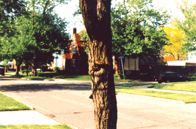
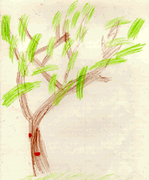

Student Project
Erin


My tree's common name is Hawthorne. This tree is prickly. It also grows purple flowers. My mother says this tree is very sick. It has a strange fungi on its trunk. I have a special picture of this fungi. I feel very ambitious while standing next to this tree. It makes me want to climb it.-Erin
c. Erin
Grade 4
Thomas Jefferson Magnet School
Euclid, Ohio USA
"Hawthorne"
Colored Pencil on Paper 9"X12"
Hawthorne
Latin Name: TBA
Age: TBA
Circumference at 54 inches from the base: TBA
Location: Euclid, Ohio USA
 Return to Main Page
Return to Main Page
June Julian jj68@nyu.edu